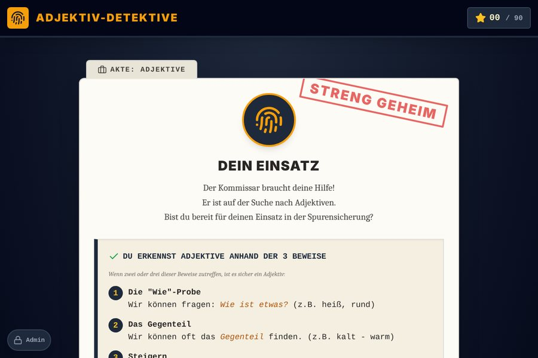

Musik
Deutsch

Die Adjektiv-Detektive Detektiv-Fälle, in denen Kinder Adjektive mit drei Beweisen erkennen, Gegenteile finden und Adjektive steigern.Lern-Apps für die Grundschule
Selbst entwickelte Web-Apps für Tafel, Tablet und PC. Ohne Anmeldung, ohne Werbung, ohne Datensammeln.

Die Adjektiv-Detektive Detektiv-Fälle, in denen Kinder Adjektive mit drei Beweisen erkennen, Gegenteile finden und Adjektive steigern.